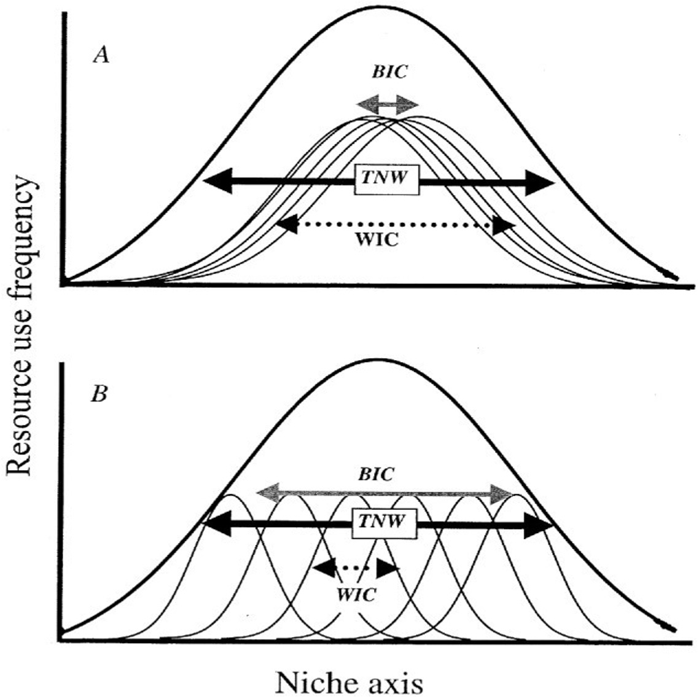
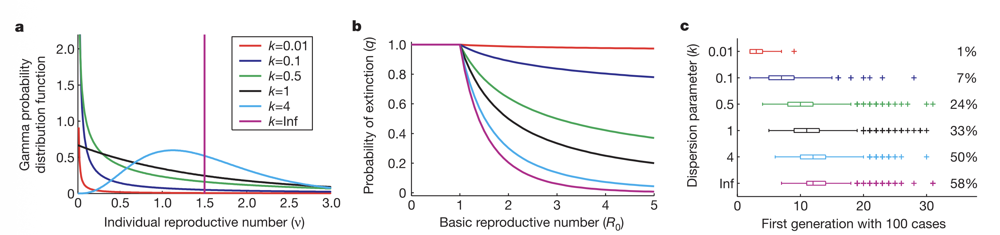
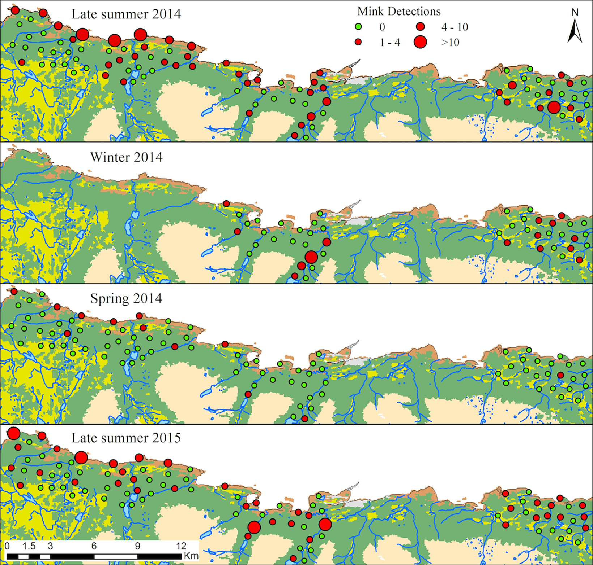

University of Florida George A. Smathers Libraries
One Health Center of Excellence
How does a computational ecologist end up in a library?
The path: PhD in Zoology -> Postdocs at USGS & EPI -> Libraries
The position: Assistant University Librarian for Computational Literacy UF’s first computational literacy position
The mission: Build computational research infrastructure and capacity across campus — from individual consultations to campus-wide workshops, and teaching.
The combination: Active research in disease ecology + expertise in teaching computational methods + ability to translate between domains.
What is computational literacy?
“Computation is not merely a tool for more efficient instruction, but the basis for a new literacy that changes how people think and learn.”
— diSessa (2000)
The gap: Most students can execute code they don’t understand The goal: Move fluently between biological meaning, mathematical formulation, and computational implementation
Computational literacy is the ability to think with computation — to use it as a medium for scientific reasoning, like written language or mathematics.
diSessa (2000) Changing Minds: Computers, Learning, and Literacy
Papert (1980) Mindstorms: Children, Computers, and Powerful Ideas
Wing (2006) “Computational Thinking” Communications of the ACM
Weintrop et al. (2016) “Defining Computational Thinking for Mathematics and Science” Journal of Science Education and Technology
What about research?
Educational infrastructure is one output. Active research is the other.
Averages hide the story

Bolnick and colleagues looked across 93 species and found that individual specialization is widespread across taxa - different individuals are doing different things
Bolnick et al. The American Naturalist 2003 Bolnick et al. TREE 2011
Focusing on variation among individuals, not species averages, reveals the mechanisms behind seed dispersal outcomes.
Zwolak. Biological Reviews 2018
The Origin: Aracari & Seed Dispersal
Primary dispersers of Virola trees in Ecuadorian rainforest
Most seeds land close to parent — but rare long-distance events are not that rare when we account for individual variation in movement
Central Limit Theorem (CLT) & Extreme Value Theory (EVT)
The special rules in statistics
CLT = gather data -> take average -> repeat many times
averages are normally distributed
The Central Limit theorem states that the distribution of sample means approaches a normal distribution as the sample size increases, regardless of the population’s original distribution.
Extreme Value Theory states that regardless of the underlying data-generating process, the behavior of extreme observations — the rare, large events in the tail — converges to a Generalized Extreme Value distribution. The tail has its own universal structure.
EVT
Why EVT matters for ecology
EVT has been used successfully in other fields:
Hydrology: - Predicting 100-year floods from 30 years of data - Estimating extreme rainfall events - Infrastructure design under climate change - Hurricanes
Finance: - Risk assessment - Portfolio stress testing - Estimating probability of catastrophic losses
Katz, Parlange & Naveau (2002) Advances in Water Resources S. Coles (2001) An Introduction to Statistical Modeling of Extreme Values
In ecology, rare events matter disproportionately
The payoff: EVT lets you predict the probability of events you haven’t witnessed yet from the data you have (focusing on the tail).
Gaines & Denny (1993) Ecology
Katz et al. (2005) Ecology
Gutschick & BassiriRad (2003) New Phytologist Beisel et.al. (2007) Genetics
Process and Pattern
Individual variation in movement shapes the tail of the dispersal kernel —
and we can use ξ (shape) to see this
The process
Individual frugivores differ in how far they move. Some are homebodies. Some are explorers. That variation is not just noise, it is the mechanism.
The pattern
Pooled models underestimate long-distance dispersal. When individual variation is modeled explicitly, the tail of the seed shadow is fatter — and ξ > 0 confirms it.
The link
ξ is not a fitting artifact. It is a fingerprint of the movement process. The shape of the seed dispersal tail traces back to how individuals move and how we capture variation across individuals.
Snell, …[Rudolph] et al. (2019) Consequences of intraspecific variation in seed dispersal for plant demography, communities, evolution and global change
Similar question, different system
Seed dispersal:
Individual birds differ in how far they move
- Some seeds travel farther than predicted from the average
- Rare long-distance events shape forest structure
- EVT quantifies the tail of the dispersal kernel
Disease transmission:
Individual hosts differ in how many others they infect
- Some outbreaks are larger than predicted from R₀
- Rare superspreading events drive epidemic dynamics
- Can EVT quantify the tail of the transmission process?
If movement heterogeneity generates fat-tailed seed shadows, does movement heterogeneity generate fat-tailed outbreak sizes?
Individual Variation in Disease Transmission
“Population-level analyses often use average quantities to describe heterogeneous systems…”
— Lloyd-Smith et al. Nature 2005
Sound familiar?
\(R_0\) is an average. It hides the same individual variation we saw in dispersal kernels:
Most individuals infect zero or one
A few infect many — superspreaders
Individual reproductive number, \(\nu\), as a random variable representing the expected number of secondary cases caused by a particular infected individual.

Same \(R_0\), six different epidemiological worlds.
More heterogeneity means more outbreaks die out, but the ones that don’t are explosive.
k describes the shape of that individual variation
The Mechanistic Foundation
Ponciano & Capistrán (2011) derive the incidence rate from first principles:
An infected individual has realized disease dispersion\(a\)
Number of successful transmission encounters \(X(a)\) follows a pure birth process
Individual variation matters here:
The exponential distribution for \(\Lambda\) already allows individuals to differ in how much they disperse pathogen.
But the exponential has a thin tail — it does not generate superspreaders.
What if dispersion effort follows a heavier-tailed distribution? What if — like seed dispersers — some infected individuals are true long-distance movers?
From Movement to Superspreaders: The Lomax Emerges
What if dispersion effort \(a\) is itself heterogeneous?
Allow dispersion effort \(a\), to be distributed as an exponential distribution, whose parameter is sampled from a gamma distribution:
Let \(A \sim \text{Gamma}(\theta, \tau)\) — individual variation in transmission potential — and \(Y \mid A \sim \text{Exp}(A)\) — realized dispersion given that potential.
Then the marginal distribution of \(Y\) is:
\[f_Y(y) = \int_0^\infty a e^{-ay} \cdot \frac{\theta^\tau}{\Gamma(\tau)} a^{\tau-1} e^{-\theta a} \, da = \frac{\tau \theta^\tau}{(y + \theta)^{\tau+1}}\]
The Lomax distribution — special case of a GPD - a heavy-tailed distribution with support on \([0, \infty)\).
The tail emerges mechanistically from the compound structure.
And the probability of transmission under Lomax-distributed dispersion:
How can we use mink movement along river corridors predict pathogen spread potential and spillover risk to native species?

Crego et.al. (2018). PLoS One
The proposal: Using EVT to predict unobserved extremes
Applications:
Predict pathogen spread potential before outbreak data exist
Identify high-risk river segments for surveillance
Quantify spillover risk to native species
The power of EVT:
You don’t need to observe a 100 km dispersal to estimate its probability.
Computational Literacy:
The simulation framework is not just analysis. It is scenario exploration. It is a reasoning tool for asking “what if” questions before the system tells you the answer.
Bringing it together: Computational literacy as infrastructure
My role at UF Libraries:
Research consulting for quantitative and computational approaches in ecology
Workshop development and instruction (R, simulation modeling, reproducibility)
Educational materials that bridge statistics, computation, and biological mechanism
Building partnerships for computational training (UF Global Fellows, Chile and Ecuador)
What I hope you take away
The research message:
Individual variation drives population-level outcomes in seed dispersal and disease transmission
Extreme Value Theory provides a formal framework for quantifying rare events
Movement ecology as the mechanistic link between individual behavior and pathogen spread
The computational literacy message:
Computation is not a tool. It is a way of thinking.
Building capacity for computational approaches is research infrastructure.
The materials you develop for your own work can become the educational resources that help others build competency.
My position exists because libraries are evolving to recognize that computational skills are foundational to research.
Thank you
Office of the Assoc. Dean of Research - UF Libraries